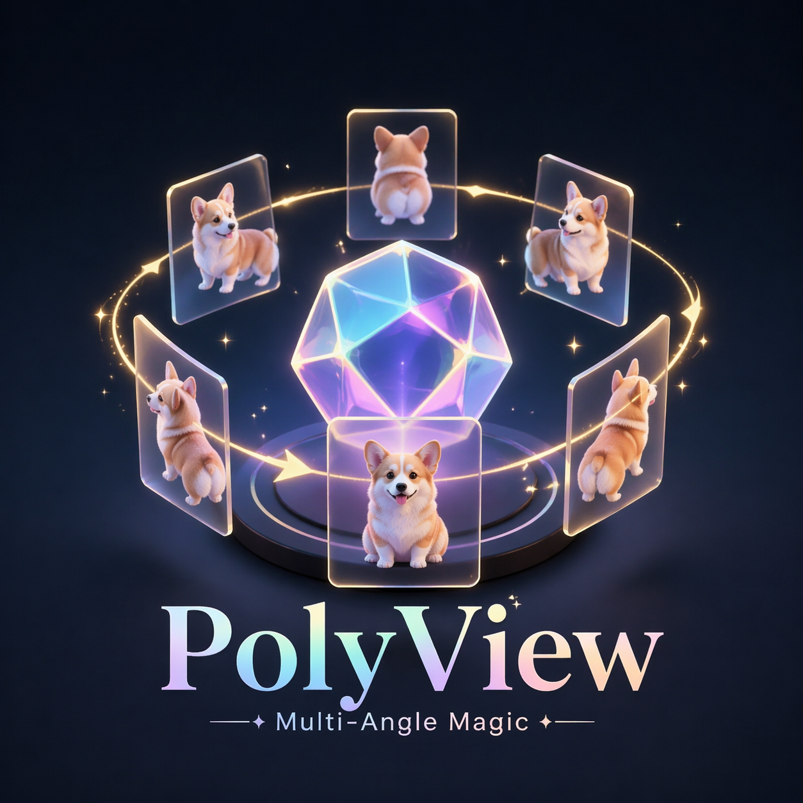

PolyView
青瓷多角度生成台
上传基础图，选择模式，分别设置五或六个标准产品视角，并直接从本地 ComfyUI 工作流生成总图和单角度图。
图片会自动写入项目 input 和 ComfyUI input，无需回到 ComfyUI 手动加载。
请选择一张待生成的基础图像
💡 提示：如需单独调整某个视角，请在下方的「5/6视图控制」区域使用各自的「单独生成」按钮。
等待任务
正向 Prompt
Celadon负向 Prompt
提交参数预览
多视图控制
选择模式后，下方将显示对应的视角列表，每个视角可单独生成。
生成结果
总图
尚未生成总图
Contact Sheet
尚未生成 Contact Sheet
单角度图片
按视角分区显示，单独生成或完整生成的结果会出现在对应视角区域
尚未生成单角度图片
输出目录
- 项目输入
D:\PixelSmile\celadon-lab\input - 总图输出
D:\PixelSmile\celadon-lab\output\total - 单图输出
D:\PixelSmile\celadon-lab\output\single - 拼接图输出
D:\PixelSmile\celadon-lab\output\contact_sheets - 日志输出
D:\PixelSmile\celadon-lab\logs